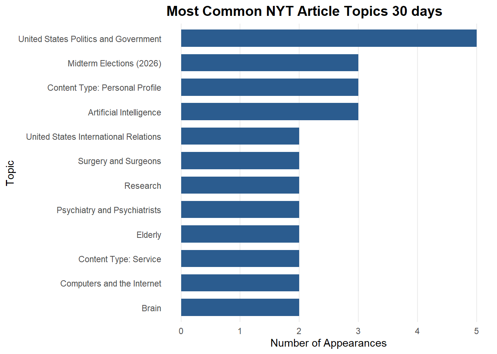
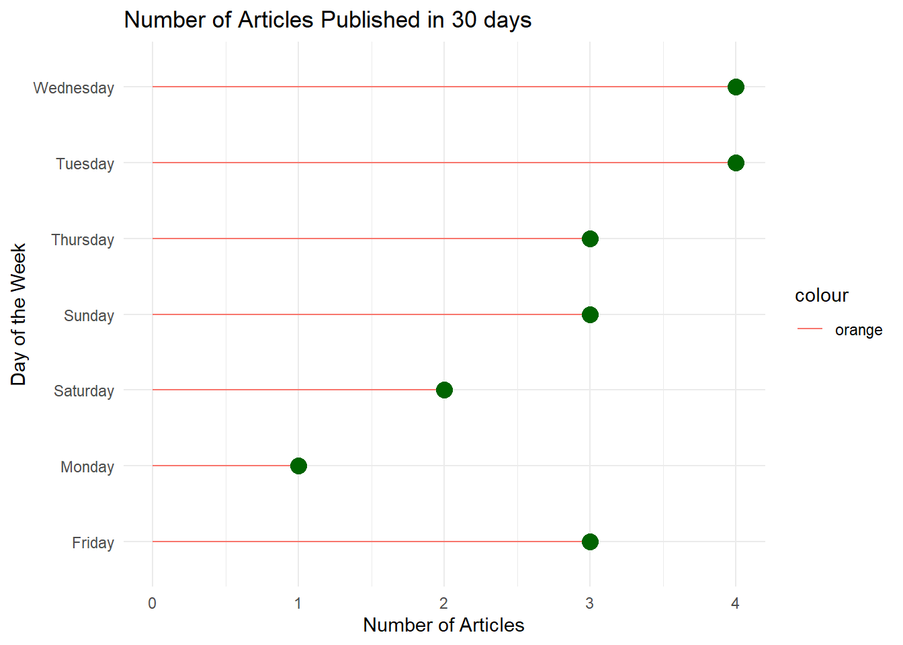

The New York Times provides multiple public APIs via its developer portal (NYT Developer Network). To use any NYT API, you must first create an account and obtain an API key.
Your task:
Choose one New York Times API endpoint (e.g., Article Search, Most Popular, Books, etc.). You should use your data analysis to ask and attempt to answer an interesting question of your choosing. Examples: “What are the top five best selling hard cover books?”, “Which newspaper sections have produced the most popular articles, and how has this changed compared to X years ago?”, etc. In R, write code to: Authenticate using your API key. Never hard code an API key. There are a number of good ways to do this. For example: Store it in an environment variable (e.g., Sys.getenv(“NYT_API_KEY”)). Make a request to the endpoint Parse the JSON response Transform the result into a clean R data frame (tibble is fine) Deliverable
A single Quarto (.qmd) document that includes: The API you selected (endpoint + brief description) The request you made (parameters used) Code that returns a tidy data frame A short note describing any data-cleaning decisions (e.g., nested fields, missing values)
Approach
I’m going to use the following api endpoint to get the most popular email articles on NYTimes.com for the period of 30 days.
Step1: Store api_key in .Renviron file and use Sys.getenv to get api_key for security reason. step2: API request to the endpoint by sending api-key in the query parameter. step 3:Parse the JSON response step4:Transform response JSON data into tibble Step5:Clean dataset step6: I’ll try to answer What topics appear most often among articles? from the dataset.
Anticipated challenges
Converting json data to data frame in R Aalyzing article topic to answer What topics appear most often among emailed articles?
Codebase
library(httr2)library(rlang)library(dplyr)
Attaching package: 'dplyr'
The following objects are masked from 'package:stats':
filter, lag
The following objects are masked from 'package:base':
intersect, setdiff, setequal, union
── Conflicts ────────────────────────────────────────── tidyverse_conflicts() ──
✖ dplyr::filter() masks stats::filter()
✖ purrr::flatten() masks rlang::flatten()
✖ purrr::flatten_chr() masks rlang::flatten_chr()
✖ purrr::flatten_dbl() masks rlang::flatten_dbl()
✖ purrr::flatten_int() masks rlang::flatten_int()
✖ purrr::flatten_lgl() masks rlang::flatten_lgl()
✖ purrr::flatten_raw() masks rlang::flatten_raw()
✖ purrr::invoke() masks rlang::invoke()
✖ dplyr::lag() masks stats::lag()
✖ purrr::splice() masks rlang::splice()
ℹ Use the conflicted package (<http://conflicted.r-lib.org/>) to force all conflicts to become errors
library(jsonlite)
Attaching package: 'jsonlite'
The following object is masked from 'package:purrr':
flatten
The following objects are masked from 'package:rlang':
flatten, unbox
library(ggplot2)library(lubridate)
The API that I have chosen will return the most popular articles on NYTimes.com for the period of 30 days. The data set has 20 rows and 22 columns.
url<-"https://api.nytimes.com/svc/mostpopular/v2/emailed/30.json"api_key<-Sys.getenv("api_key")# make API requestresponse<-request(url) %>%# Add custom headersreq_headers("Accept"="application/json")%>%req_url_query(`api-key`= api_key ) %>%req_perform()# Extract JSON response as textjson_data <-resp_body_string(response)# Parse JSON data<-fromJSON(json_data)# check object typeclass(data)
[1] "list"
# Convert the list of elements into a clean tibblearticles <-bind_rows(data$results)# clean datasetclean_df<-articles%>%select(url,id,published_date,section,byline,title,des_facet)%>%unnest_longer(des_facet)%>%mutate(published_date =as.Date(published_date) ) unnest_df<-clean_df%>%count(des_facet,sort=TRUE)
For further data analysis, I retained only url,id,published_date,section,byline,title,des_facet columns by stripping out unnecessary columns. Next, the des_facet field contains nested list arrays of multiple topic tags per article, the unnest_longer() function was applied. This expanded the dataset vertically by extracting each individual string descriptor into its own distinct row
What topics appear most often among articles?
top_10_topics <- unnest_df %>%slice_max(order_by = n, n =10)ggplot(top_10_topics, aes(x =reorder(des_facet, n), y = n)) +geom_col(fill ="#2b5c8f", width =0.7) +coord_flip() +labs(title ="Most Common NYT Article Topics 30 days",x ="Topic",y ="Number of Appearances" ) +theme_minimal()+theme(panel.grid.major.y =element_blank(),panel.grid.minor =element_blank(),plot.title =element_text(face ="bold", size =14),plot.subtitle =element_text(color ="gray30") )

The chart illustrates the top 10 most frequent article topics appearing over a 30-day period.United States Politics and Government is the most frequent topic with 5 appearances in 30 days, followed by Midterm Elections(2026), Personal Profile, and AI are tied with 3 appearances each, while the rest of the articles topics are tied with 2 appearances each.
During a 30-day period, the Opinion section published the maximum number of articles with 4, closely followed by the Science section with 3. Business, Magazine, U.S., and Well are tied with 2 articles each, while Books, Style, Technology, Travel, and World published the least with 1 article each.
Rows: 106
Columns: 7
$ url <chr> "https://www.nytimes.com/2026/10/18/opinion/business-sc…
$ id <dbl> 1e+14, 1e+14, 1e+14, 1e+14, 1e+14, 1e+14, 1e+14, 1e+14,…
$ published_date <date> 2026-10-18, 2026-10-18, 2026-10-18, 2026-10-18, 2026-1…
$ section <chr> "Opinion", "Opinion", "Opinion", "Opinion", "Well", "We…
$ byline <chr> "By Chris Marquis", "By Chris Marquis", "By Chris Marqu…
$ title <chr> "I Teach at a Business School. It’s Time to Shut Them D…
$ des_facet <chr> "Business Schools", "Colleges and Universities", "Execu…
ggplot(article_per_day, aes(x = day, y = total_articles)) +geom_segment(aes( color ="orange",xend = day, y =0, yend = total_articles) ) +coord_flip() +geom_point(color ="darkgreen",size =4) +labs(title ="Number of Articles Published in 30 days",x ="Day of the Week",y ="Number of Articles" ) +theme_minimal()

glimpse(clean_df)
Rows: 106
Columns: 7
$ url <chr> "https://www.nytimes.com/2026/10/18/opinion/business-sc…
$ id <dbl> 1e+14, 1e+14, 1e+14, 1e+14, 1e+14, 1e+14, 1e+14, 1e+14,…
$ published_date <date> 2026-10-18, 2026-10-18, 2026-10-18, 2026-10-18, 2026-1…
$ section <chr> "Opinion", "Opinion", "Opinion", "Opinion", "Well", "We…
$ byline <chr> "By Chris Marquis", "By Chris Marquis", "By Chris Marqu…
$ title <chr> "I Teach at a Business School. It’s Time to Shut Them D…
$ des_facet <chr> "Business Schools", "Colleges and Universities", "Execu…
The maximum number of articles was published on Tuesday and Wednesday with 4 each, followed by Thursday, Sunday, and Friday with 3 each, while the least number of articles was published on Monday with 1.
Conclusion
Based on the most popular articles published over a one-month period, the most common topic was United States Politics and Government, with the Opinion section publishing the highest volume of content. Additionally, the maximum number of articles was published on Tuesdays and Wednesdays.